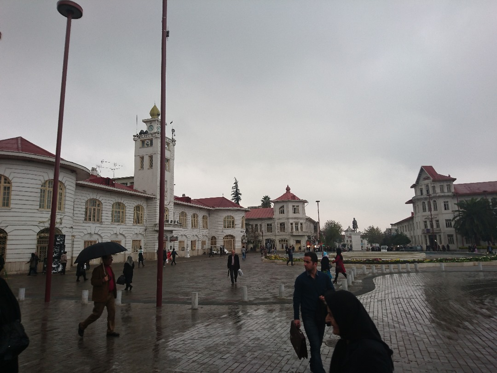
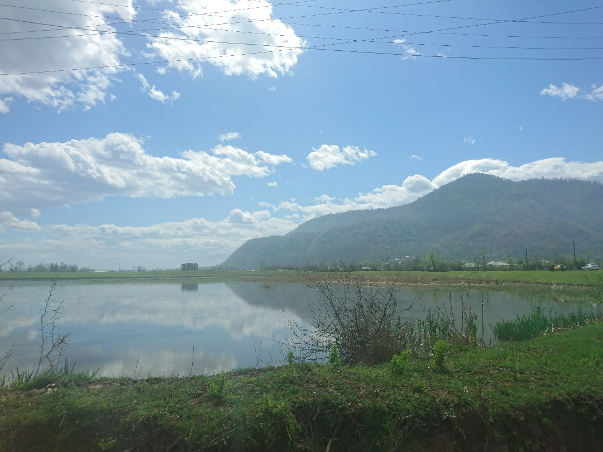
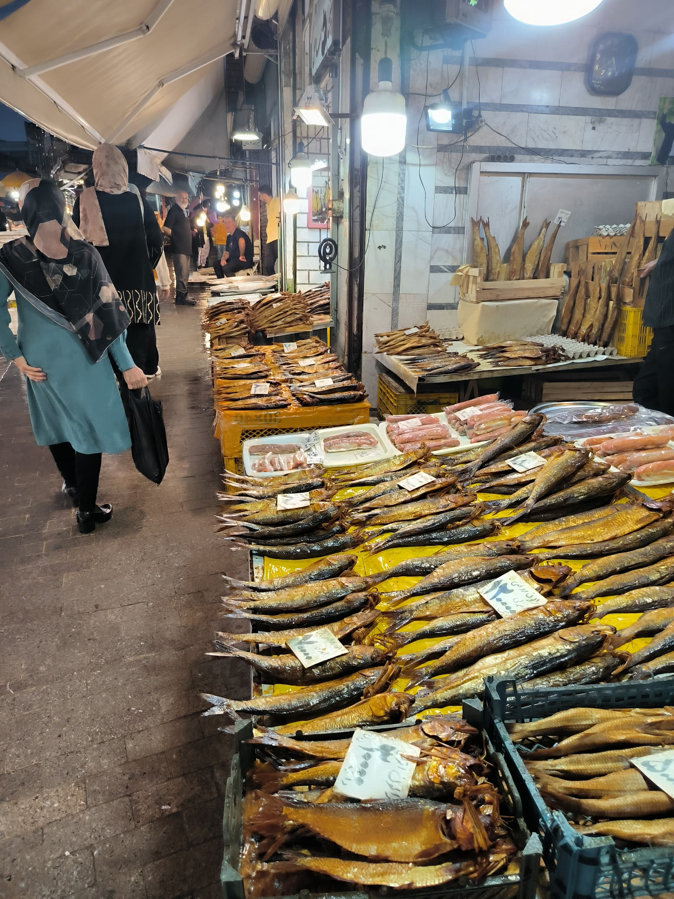
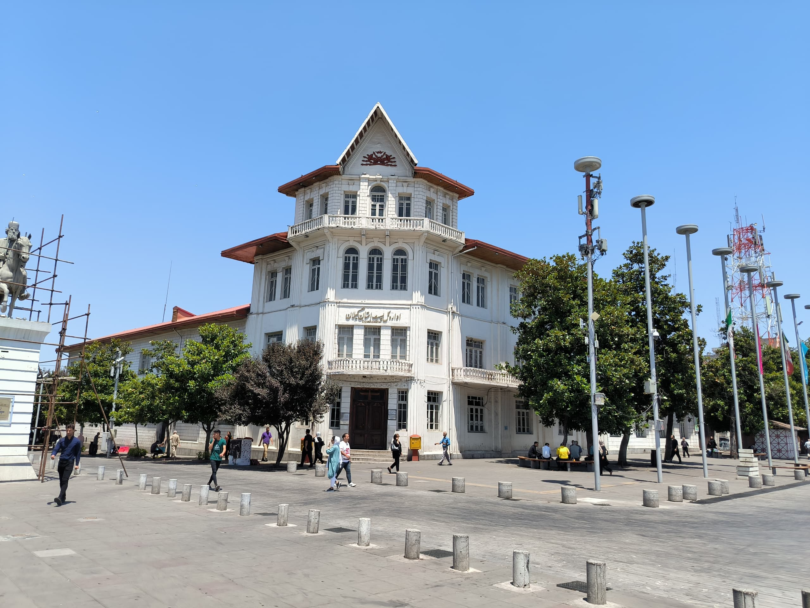

Rasht mainly is known for its nature. It mostly has rainy weather but that helps it to be a green city.
That's why most people go and spend their time in nature in Rasht.


Rasht boasts a rich history and architectural heritage. Explore notable landmarks like "Sepid Rood" cinema, which has stood the test of time and continues to entertain visitors.
Don't miss the vibrant "Bazaar-e Rasht," a marketplace brimming with traditional foods and locally caught fish, offering a taste of the city's culinary treasures.

